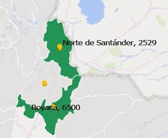
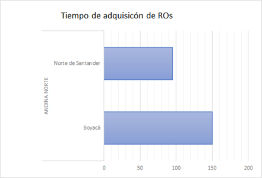
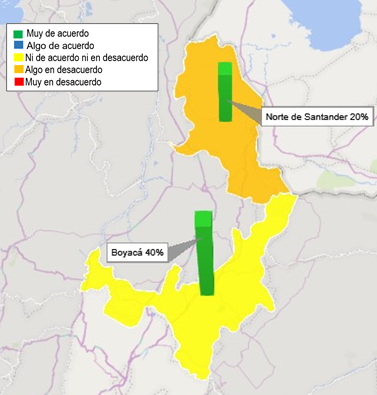
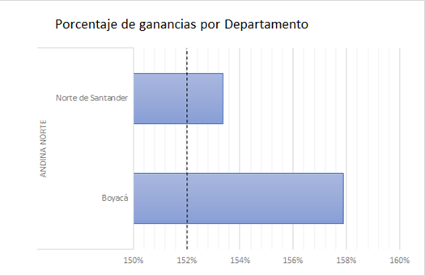
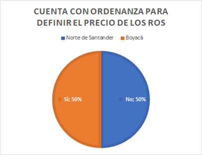
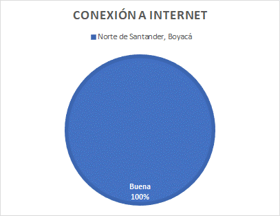
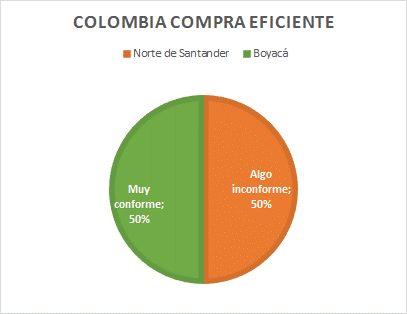

9.1 Región Andina Norte
Esta región se compone de los siguientes departamentos:
- Boyacá
- Norte de Santander
- Santander
Para el análisis de la región Andina Norte primero es importante, ver algunas variables sociodemográficas y ambientales que pueden repercutir en el comportamiento de los cuatro departamentos que la componen, Boyacá, Cundinamarca, Norte de Santander y Santander. Los FRE se encuentran en las ciudades capitales correspondientes de Tunja, Bogotá (Nuevo), Cúcuta y Bucaramanga.
Boyacá cuenta con una población de 1 281 979 habitantes(2018) y 123 municipios, Norte de Santander tiene una población de 1 391 366 habitantes (2016) y 40 municipios, con la condición especial de que es el departamento de la región andina norte que comparte la frontera más extensa con Venezuela y Cúcuta es también una ciudad fronteriza que tiene una temperatura promedio de 28C, Santander posee una población de 2 280 908 hab y 86 municipios. Por último está Cundinamarca (3 200 000 habitantes excluyendo Bogotá) que es el departamento más densamente poblado que al incluir a Bogotá, suma una población de aproximadamente 11 millones de habitantes, este departamento no será analizado por que la existencia de su FRE es muy reciente, por lo tanto no hay suficientes insumos para evaluar mediante este proyecto.
Estas consideraciones se hacen con el fin de tratar de agregar un insumo al análisis de los hallazgos en general debido a que los FRE se comportan de manera muy heterogénea en muchas de las variables analizadas en este estudio.
9.1.1 Adquisición, Venta y Distribución de RO
En cuanto al proceso de adquisición de recetarios oficiales, se puede observar que los departamentos de Boyacá y Norte de Santander no son muy cercanos al proceso de adquisición y solo están encargados de los estudios previos para entregar a los departamentos encargados de las respectivas licitaciones en Secretaría de Salud y Gobernaciones, entendiendo de manera muy superficial todo el proceso y tiempo que lleva a cabo cada operación cómo la oferta, el pliego de requisitos, etc. Sin embargo sí tienen opiniones sobre las particularidades en cada punto hasta el despacho de los recetarios.
Figura 9.1: N.° de recetarios en la Región Andina Norte
En cuanto a las existencias actuales, en la Figura 9.1 se observan las cantidades descritas durante la visita de inmersión territorial, el departamento de Boyacá es el que más existencias tiene, debido a que su proceso de adquisición es lento (5 meses aprox.) y decidieron tener existencias aproximadas para 3-4 años, siendo un dato atípico en la región que hace este proceso anual. Ninguno de los departamentos presenta anomalías o desabastecimiento de recetarios oficiales.
Figura 9.2: Tiempos de adquisición de recetarios en la Región Andina Norte
Sobre todo el proceso de venta y ganancias netas que deja la venta de recetarios oficiales en la región se puede observar que Boyacá y Norte de Santander. se puede observar que Boyacá es el que más margen de ganancia tiene sobre la venta de recetarios con 158% Figura 9.3, si se cruza esta información con el 40% que aporta la venta de los recetarios al total de los ingresos del FRE cómo se ve en la Figura 9.3, esta también podría ser una posible explicación de la prioridad de Stock que tiene este departamento, por otro lado, Norte de Santander maneja un Stock equilibrado también a sus necesidades que corresponde con proceso de adquisición mucho más rápido y eficiente en cuanto al despacho de los recetarios oficiales.
Figura 9.3: Porcentaje de ingresos provenientes del RO y conformidad respeto a la implementación del ROE
Un proceso crítico dentro del manejo de los recetarios oficiales, es la ordenanza o acto administrativo que fija sus precios, pues es la manera de controlar los precios de estos medicamentos y evitar que puedan existir barreras de acceso o procesos irregulares relacionados con la venta de los mismos. En la Figura 9.4 se puede observar qué en los departamentos analizados, sólo Norte de Santander no tiene ordenanza o un acto administrativo que fije los precios de los recetarios oficiales. Esto sucede porque por normativa departamental, este acto administrativo debe ser evaluado por la Asamblea de Norte de Santander, siendo un proceso largo que tiene un carácter mucho más político.
Figura 9.4: Porcentaje de ganancias en los departamentos
9.1.2 Seguimiento y Control de RO
Para este ítem se observan comportamientos heterogéneos en los departamentos, por ejemplo para el departamento de Boyacá hacen el seguimiento de manera exhaustiva comparando las colillas de los recetarios oficiales entregados, con el libro de entrega de recetarios oficiales, también se evidencia que no hay ningún protocolo ante posibles Fraudes o desvíos, debido a que nunca han presentado un problema relacionado, pero acusan que en caso de darse, lo primero que harían sería un denuncio ante la policía. Mientras que el FRE Norte de Santander con los datos que hay en el sistema, también se coteja la información en las auditorias que hace el Instituto Departamental de Salud a los prestadores, también se evidencia que se siguen los protocolos de IVC del IDS en casos de posibles fraudes o desvíos, durante las visitas de IVC, hay recetarios que no vienen con el sello o con letra y estructura. Explican que hay una necesidad por la crisis fronteriza que tiene el departamento en la actualidad. Hay evidencia de un procesos sancionatorios por anomalías en la distribución de recetarios.
Referente a la Seguridad de los recetarios, ambos departamentos tienen una gran confianza en ellos, sin embargo, se puede observar que el recetario del FRE Boyacá contiene mucho más distintivos de seguridad que el Norte de Santander, lo cual es crítico para un departamento que comparte una zona fronteriza tan grande con Venezuela.
9.1.3 Recepción Consolidación e Inventario de RO
En ninguno de los departamentos evaluados se hace una recepción y consolidación de recetarios oficiales, pues manifiestan que tienen diferentes métodos para asegurarse que las cantidades solicitadas sean las indicadas y los pacientes de las instituciones existan, por ejemplo Norte de Santander recibe las cajas de inventarios solo para hacer contrarreferencia de las copias de los recetarios por los códigos y luego procede a destruir las cajas, no almacenan, mientras Boyacá recibe las cajas de la misma manera pero solo las acumula. Para el inventario de los recetarios oficiales que entran, solo se toma cómo almacenamiento muerto, pues no existe algún control real de recepción y consolidación en el caso de los departamentos que no hacen destrucción automática. en cuanto a las existencias nuevas de recetarios disponibles para venta, se realizan inventarios en conjunto con los medicamentos, hay un control de salidas y entradas de cantidades que se revisan semanalmente para verificar que no existan pérdidas, hasta el momento no existe alguna discrepancia o desvío reportado de recetarios.
9.1.4 Ruta tecnológica.
En general la región Andina se caracteriza por tener una conectividad de internet muy buena, rutas de fácil acceso y tecnología suficiente en sus instalaciones, hasta el momento ninguno de los FRE evaluados ha tenido problemas de conectividad a internet u obsolescencia en equipos de cómputo (Figura 9.6), incluso departamentos cómo Norte de Santander manejan el funcionamiento del FRE con programas propios de la Gobernación. en el caso de Boyacá se ha evidenciado que si bien muchos de los procesos los maneja de manera manual, esto se hace más por decisión propia que por alguna falla tecnológica en la región (Figura 9.5).
Figura 9.5: Cuenta con ordenanza
Figura 9.6: Evaluación de la conexión de internet
| Departamento | Anexos | Inventarios |
|---|---|---|
| Boyacá | No | No |
| Norte de Santander | Si | Si |
9.1.5 Proyección de Compra MME
Cómo se mencionó en el inciso de los recetarios oficiales, los FRE evaluados de la Región Andina Norte solo participan de manera activa en los estudios previos de todo el proceso de contratación para cualquiera sea la ocasión, por esta razón si bien tienen claridad sobre la demora en los tiempos de cada parte del proceso que no llevan a cabo, no tienen una idea más allá de la complejidad o realización de estos pasos. En Norte de Santander se comparan consumos históricos y fechas de vencimiento, ponen cómo ejemplo que no se puede comprar Metilfenidato de 10mg porque se encuentra a punto de vencerse, en este FRE se manejan cortes semestrales pero un solo registro anual de compras, En Boyacá hace principalmente dos compras al año, las cuales son estimadas observando el consumo anual y las necesidades que hayan manifestado los clientes, a esta cifra se le incrementa un 10% debido a que suelen llegar menos medicamentos de los solicitados al Fondo Nacional de Estupefacientes o para tener una reserva corta. En Santander…
9.1.6 Recepción técnica.
La recepción técnica suele ser un tema que está estandarizado en los diferentes FRE, pero hay particularidades que es importante resaltar con el fin de entender mejor este proceso y qué variables pueden ser influyentes. Lo más relevante para destacar es que en el FRE Boyacá, se toman tres días para hacer la recepción técnica, debido a que es la encargada del FRE la que se encarga personalmente de hacer la recepción, ralentizando el proceso al volverlo unipersonal, esto no quiere decir que el talento humano relacionado al FRE no colabore, sino que el procedimiento de llenado de actas y revisión de calidad de los MME lo hace la encargada sola. Sin embargo, que esta recepción se haga en un periodo largo, no ha
9.1.7 Almacenamiento e inventario de MME
9.1.8 Proceso de distribución a instituciones y pacientes
Figura 9.7: Percepción de Colombia Compra Eficiente
| Departamento | 1 | 2 | 3 | 4 |
|---|---|---|---|---|
| Antioquia | Solo una vez se quedaron sin contrato para recetarios, entre 15 días y un mes sin recetarios. Como antes se manejaba recetario institucional (antes de que manejara recetario oficial), que debía dar cumplimiento al anexo 8 de la 1478. En ese momento se autorizó a las institucionales a usar recetarios institucionales. Este hecho ocurrió hace 6 años. la percepción de cara al ROE es favorable ya que según la opinión de la directora de FRE Antiquia, brindaría mayor oportunidad de seguimiento, trazabilidad y seguridad. Sin embargo, manifiesta que la transición al ROE debe ser progresiva hasta el agotamiento de los recetarios oficiales físicos con los que cuentan los FRE en este momento. | —— | no se hace recepción de recetarios ni consolidación de su información | ——– |
| Quindío | No cuenta con acto administrativo para fijar los precios de venta de RO. Tampoco tiene conocimiento del % de ingresos provenientes de los RO. Respecto a la implementación del Recetario Oficial Electrónico (ROE), el FRE Quindío expresa que, si la implementación del ROE permite seguir superando los gastos de personal y los gastos de las actividades requeridas para el funcionamiento del FRE, la implementación de los ROE es viable. Sin embargo, se resalta como punto de manejo a tratar la preocupación sobre la población del Departamento que no tiene acceso a internet. | No se tiene en mente la posibilidad de un desabastecimiento de RO, sin embargo, en caso de que se presentara dicha situación se convocaría una reunión extraordinaria con la Secretaría de Salud, el FRE y todos los colaboradores con el fin de que sea multidisciplinaria para establecer un plan de contingencia y resolución. | Los ROs diligenciados allegados al FRE son destruidos una semana después de haber llegado, así mismo no se tiene base de datos donde se diligencia dicha información. | —- |
| Huila | La proyección de necesidad de RO requerida para cubrir las necesidades del departamento es realizada a partir de un simple cálculo, se contempla: La información asociada con la última compra de RO y el comportamiento histórico que han tenido los recetarios en el territorio. NO llevan algún tipo de base de datos o herramienta para la proyección de la necesidad de los RO. La adquisición de recetarios oficiales es dirigida por la Secretaria de Salud de la Gobernación del Huila. | —- | —- | Paquete ofimático y softwarellamado “EXTRANET” plataforma oficial de la Gobernación del Huila, para el manejo y la consolidación de inventariosy anexos que deben presentarse ante la UAE - FNE. Únicamente dos (2) equipos de cómputo y deben ser reemplazados por obsolescencia. La conexión de internet es “Buena” según percepción del personal. |
| Tolima | El FRE Tolima no lleva algún tipo de base de datos o herramienta para la proyección de la necesidad de los recetarios oficiales en el departamento. Se hace por medio de las copias de las facturas. Además, se evidenció desconocimiento sólido relacionado al proceso de contratación para la adquisición de los RO. NO cuenta con acto administrativo. Plan de contingencia ante la nula disponibilidad de recetarios oficiales, el FRE Tolima deberá informar la situación a las diferentes IPS y servicios farmacéuticos, vía correo electrónico. En la correspondencia, el ente territorial manifiesta recibir formulas institucionales en estos casos, siempre y cuando cumpla con los requisitos del recetario oficial. | —- | —- | Paquete ofimático para el manejo y la consolidación de inventarios y los anexos que debe presentar ante la UAE FNE. Dos (2) equipos de cómputo que deben ser cambiados por obsolescencia, sin embargo, se ajusta a todo el personal vinculado al ente territorial. La conexión de internet es “Buena” según percepción del personal. |